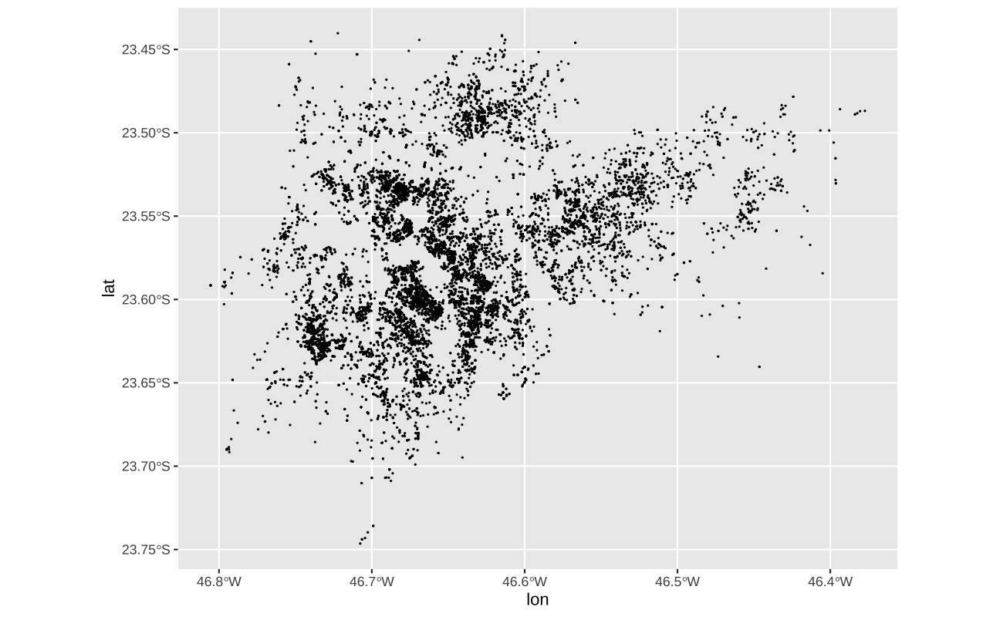
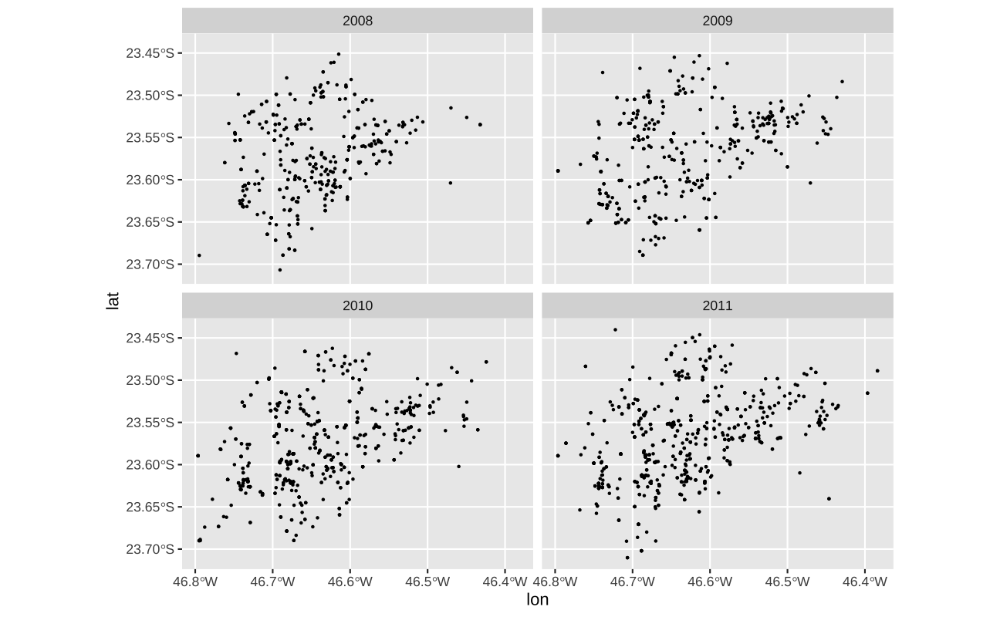
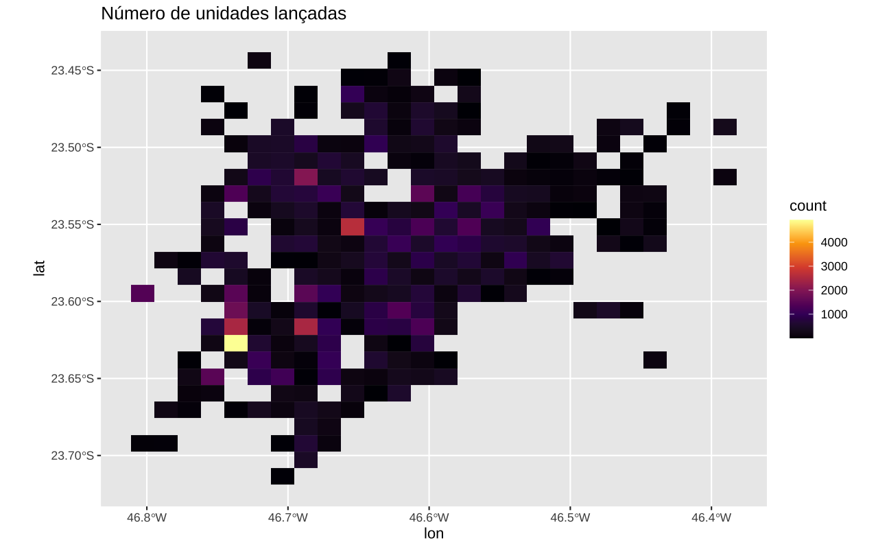

library(leaflet)
leaflet() %>%
addTiles() %>%
setView(lng = -46.6554, lat = -23.5651, zoom = 13)Mapas
Eu começo este post com uma confissão: eu sofri muito até conseguir fazer mapas minimamente apresentáveis com o R. Há duas dificuldades bem sérias: primeiro, objetos geométricos são uma classe de objetos bastante complexa; segundo, há inúmeras convenções na elaboração de mapas que escapam completamente aos objetivos do economista.
Este post vai tentar ensinar a fazer mapas, apresentando absolutamente o mínimo necessário sobre convenções cartográficas, tipos de projeção, e geografia de maneira geral. Por questão de completude ele é dividido em três partes: na primeira parte mostro como fazer mapas de pontos de maneira simples sem se preocupar com geometria; na segunda parte mostro como fazer mapas coropléticos, mapas onde as cores usualmente representam o valor das variáveis; por fim, na terceira parte, mostro como fazer mapas estáticos com “elementos de mapa” como ruas, avenidas, rios, etc.
Quero apenas fazer um mapa interativo
Se o seu objetivo é fazer um mapa interativo não use ggplot. Comece explorando o leaflet. Se o objetivo for menos visualização e mais “ciência de dados” e você não quer perder horas customizando cores no {leaflet} use o {tmap} ou {mapview}.
Mapas estáticos sem objetos espaciais
O básico
A abordagem mais simples para tratar dados espaciais é simplesmente tratá-los como dados tabulados quaisquer. Isto funciona perfeitamente bem para objetos geométricos na forma de pontos e linhas, mas torna-se impraticável no caso de polígonos.
No plano cartesiano, longitude e latitude são literalmente coordenadas; pode-se mapear estas coordenadas como pontos num gráfico de dispersão. Para tornar os exemplos mais aplicados vamos usar a base de Empreendimentos Residenciais Verticais da Embraesp, disponibilizado pelo Centro de Estudos da Metrópole da FAU/USP. Os dados compreendem todos os lançamentos residenciais na Região Metropolitana de São Paulo entre 1985 e 2013. Para simplificar nossa análise vamos nos restringir somente aos empreendimentos lançados na capital.
#> Os pacotes necessários
library(ggplot2)
library(sf)
library(dplyr)
# Para ler os dados dentro do R a partir do Github
cem <- readr::read_csv(
"https://github.com/viniciusoike/restateinsight/raw/main/static/data/cem_imoveis.zip"
)
#| Seleciona apenas os empreendimentos lançados em São Paulo (capital)
cem <- cem |>
mutate(code_muni = as.numeric(substr(ap2010, 1, 7))) |>
filter(code_muni == 3550308)No gráfico abaixo cada ponto é um empreendimento residencial lançado em São Paulo entre 1985 e 2013. Note que os valores de longitude e latitude são fornecidos diretamente aos argumentos x e y.
A função coord_sf fornece mais estrutura ao sistema de coordenadas. Especificamente, esta função garante que os dados plotados compartilhem o mesmo sistema de coordenadas e permite explicitamente definir qual sistema utilizar. No exemplo abaixo uso crs = sf::st_crs(4326) que é código para a projeção do World Geodetic System.
ggplot(cem, aes(x = lon, y = lat)) +
geom_point(size = 0.1) +
coord_sf(crs = sf::st_crs(4326))
A principal vantagem de tratar os pontos, simplesmente como pontos, é que podemos aplicar todo o nosso conhecimento acumulado até agora. Os dados no gráfico seguem a mesma lógica dos gráficos de dispersão, visto anteriormente e a sua manipulação segue as mesmas convenções de dados tabulares convencionais.
No exemplo abaixo, o tamanho de cada círculo é proporcional ao número de unidades do empreendimento e a cor sinaliza se o empreendimento é veritical ou horizontal.
#> Seleciona somente empreendimentos lançados em 2008
cem08 <- cem |>
filter(ano_lanc == 2008)
ggplot(cem08, aes(x = lon, y = lat)) +
geom_point(aes(size = emp_unid, color = as.factor(emp_tipo)), alpha = 0.5) +
coord_sf(crs = st_crs(4326))
Infelizmente, é necessário repetir o CRS da projeção dos dados em todos os gráficos. No post seguinte, vamos ver como construir objetos “geométricos” com o pacote sf, que funcionam como um data.frame embutido com informação espacial; neste caso, o ggplot2 sabe qual a projeção a ser utilizada e não é necessário declará-la.
Pode-se também fazer gráficos em facets usando os dados de longitude e latitude. No gráfico abaixo, mostro os lançamentos ano a ano no período 2008-2011.
#> Seleciona empreendimentos lançados entre 2008 e 2011
sub <- cem |>
filter(ano_lanc %in% 2008:2011)
ggplot(sub, aes(x = lon, y = lat)) +
geom_point(size = 0.4) +
coord_sf(crs = st_crs(4326)) +
facet_wrap(vars(ano_lanc))
Agregando pontos
Mapas de contorno
Pode-se agregar os pontos em mapas de calor (contorno). Há duas funções principais:
geom_density_2d- que desenha linhas de contornogeom_density_2d_filled- que desenha uma mapa de contorno
Nos gráficos abaixo uso apenas a subamostra de lançamentos no período 2008-2011.
ggplot(sub, aes(x = lon, y = lat)) +
geom_density_2d() +
coord_sf(crs = st_crs(4326)) +
theme(legend.position = "none")
ggplot(sub, aes(x = lon, y = lat)) +
geom_density_2d_filled() +
coord_sf(crs = st_crs(4326)) +
theme(legend.position = "none")
Talvez o argumento mais útil destas funções seja o bins ou binwidth, similar ao argumento de geom_histogram. Os mapas abaixo mostram como este argumento controla o número de quebras nas linhas de contorno. A função que calcula os contornos é a MASS::kde2d() e, em geral, ela escolhe bons valores para o número de bins.
ggplot(sub, aes(x = lon, y = lat)) +
geom_density_2d_filled(bins = 5) +
coord_sf(crs = st_crs(4326))
ggplot(sub, aes(x = lon, y = lat)) +
geom_density_2d_filled(bins = 8) +
coord_sf(crs = st_crs(4326))
ggplot(sub, aes(x = lon, y = lat)) +
geom_density_2d_filled(bins = 10) +
coord_sf(crs = st_crs(4326))
ggplot(sub, aes(x = lon, y = lat)) +
geom_density_2d_filled(bins = 15) +
coord_sf(crs = st_crs(4326))Na base de dados do CEM cada linha é um tipo de unidade lançada de um empreendimento (uma tipologia). Assim, é possível (e recorrente) que um mesmo empreendimento apareça em várias linhas. A tabela abaixo mostra os empreendimentos lançados pela Cyrella em 2009. Note como o mesmo empreendimento aparece mais do que uma vez.
sub |>
filter(construt_a == "Cyrela", ano_lanc == 2009) |>
select(data_lanc, name_district, cep, emp_andares, emp_unid, emp_dorm, emp_elev, dorm, banh) |>
arrange(data_lanc)# A tibble: 15 × 9
data_lanc name_district cep emp_andares emp_unid emp_dorm emp_elev
<date> <chr> <chr> <dbl> <dbl> <dbl> <dbl>
1 2009-03-15 SANTO AMARO 04754-010 27 108 324 3
2 2009-03-15 SANTO AMARO 04754-010 27 108 432 3
3 2009-05-15 SANTO AMARO 04754-050 27 108 324 3
4 2009-05-15 SANTO AMARO 04754-050 27 108 432 3
5 2009-08-15 SANTO AMARO 04757-020 26 208 416 5
6 2009-08-15 SANTO AMARO 04757-020 26 104 312 3
7 2009-08-15 MORUMBI 05653-160 4 42 84 1
8 2009-08-15 MORUMBI 05653-160 4 159 318 3
9 2009-09-15 SANTO AMARO 04754-010 27 216 864 6
10 2009-10-15 SANTO AMARO 04757-020 27 108 324 3
11 2009-10-15 SANTO AMARO 04757-020 27 108 432 3
12 2009-10-15 CASA VERDE 02452-001 26 104 312 3
13 2009-11-15 SANTANA 02460-000 20 80 320 3
14 2009-12-15 MORUMBI 05653-160 4 90 90 5
15 2009-12-15 MORUMBI 05653-160 4 136 272 7
dorm banh
<dbl> <dbl>
1 3 2
2 4 2
3 3 2
4 4 2
5 2 2
6 3 2
7 2 2
8 2 2
9 4 3
10 3 2
11 4 2
12 3 3
13 4 3
14 1 1
15 2 2Quando os dados estão na forma de uma “tabela de frequências” usualmente usa-se o argumento weight. O exemplo abaixo mostra um gráfico de dispersão entre a área útil de cada tipologia e o seu preço final (atualizado pelo IGP-DI). No primeiro caso, cada tipologia tem peso idêntico, ou seja, uma tipologia que foi lançada 200 vezes tem o mesmo peso que uma outra tipologia que foi lançada apenas 20 vezes. No gráfico da direita, o argumento weight = emp_unid cria uma peso para cada observação, de tal maneira que as tipologias mais representativas têm peso maior no ajuste.
ggplot(sub, aes(x = ar_ut_unid, y = log(pc_tt_atu))) +
geom_point() +
geom_smooth(method = "gam") +
scale_y_continuous(limits = c(NA, 16))
ggplot(sub, aes(x = ar_ut_unid, y = log(pc_tt_atu))) +
geom_point() +
geom_smooth(aes(weight = emp_unid), method = "gam") +
scale_y_continuous(limits = c(NA, 16))
Infelizmente, a função subjacente que a geom_density_2d utiliza não funciona diretamente com o argumento weight. A solução para contornar isto é criar uma tabela de dados onde as observações são repetidas usando a função uncount. Esta função repete as linhas de uma tabela segundo alguma variável: no caso abaixo, cada linha é repetida de acordo com o número de unidades que foram lançadas.
count_unidades <- sub |>
select(emp_code, emp_unid, lat, lon) |>
uncount(emp_unid)
ggplot(count_unidades, aes(x = lon, y = lat)) +
geom_density_2d() +
coord_sf(crs = st_crs(4326)) +
ggtitle("Unidades lançadas") +
labs(x = NULL, y = NULL) +
theme(legend.position = "none")
ggplot(sub, aes(x = lon, y = lat)) +
geom_density_2d() +
coord_sf(crs = st_crs(4326)) +
ggtitle("Empreendimentos lançados") +
labs(x = NULL, y = NULL) +
theme(legend.position = "none")

Mais a título de curiosidade, também é possível usar adaptar a função stat_density_2d() para gerar um mapa similar ao do geom_count.
ggplot(sub, aes(x = lon, y = lat)) +
geom_count() +
coord_sf(crs = st_crs(4326))
ggplot(sub, aes(x = lon, y = lat)) +
stat_density_2d(
geom = "point",
aes(size = after_stat(density)),
n = 20,
contour = FALSE
)Pode-se separar os contornos em grupos com cores distintas. No gráfico abaixo eu separo os empreendimentos pelo número de andares. Vê-se que os empreendimentos horizontais simples, de apenas um andar, estão concentrados no lado nordeste do gráfico. Já os empreendimentos verticais mais elevados (20 a 35 andares) estão concentrados no sudoeste do gráfico (grosso modo, região do Itaim Bibi) e na região oeste (grosso modo, região da Vila Formosa).
sub <- sub |>
mutate(
group = findInterval(emp_andares, c(1, 5, 10, 20, 35)),
group = factor(
group,
labels = c("1", "1 a 5", "5 a 10", "10 a 20", "20 a 35")
)
)
ggplot(sub, aes(x = lon, y = lat)) +
geom_density_2d(aes(color = group)) +
coord_sf(crs = st_crs(4326)) +
scale_color_brewer(name = "Número de andares", palette = 6, type = "qual") +
theme(legend.position = "bottom")
Como de costume, é possível sobrepor vários tipos de geoms num mesmo gráfico. O gráfico abaixo mostra a distribuição espacial dos empreendimentos de 10 a 20 andares.
sub <- sub |>
mutate(
group = findInterval(emp_andares, c(1, 5, 10, 20, 35)),
group = factor(
group,
labels = c("1", "1 a 5", "5 a 10", "10 a 20", "20 a 35")
)
)
ggplot(filter(sub, group == "10 a 20"), aes(x = lon, y = lat)) +
geom_point(aes(size = emp_unid), alpha = 0.1) +
geom_density_2d_filled(alpha = 0.5) +
coord_sf(crs = st_crs(4326))
Mapas com grids
Por fim, vale mencionar duas funções simples que permitem agregar os pontos em um grid regular. Há duas opções de grids:
- Quadrados com a função
geom_bin2d()ougeom_bin_2d() - Hexágonos com a função
geom_hex()
Tanto quadrados como hexágonos tem boas propriedades geométricas que os tornam aptos a agregar dados espaciais.
ggplot(sub, aes(x = lon, y = lat)) +
geom_bin2d() +
scale_fill_viridis_c(option = "inferno")
ggplot(sub, aes(x = lon, y = lat)) +
geom_bin2d(bins = 10) +
coord_sf(crs = st_crs(4326)) +
scale_fill_viridis_c(option = "inferno")
ggplot(sub, aes(x = lon, y = lat)) +
geom_bin2d(bins = 15) +
coord_sf(crs = st_crs(4326)) +
scale_fill_viridis_c(option = "inferno")
ggplot(sub, aes(x = lon, y = lat)) +
geom_bin2d(bins = 25) +
coord_sf(crs = st_crs(4326)) +
scale_fill_viridis_c(option = "inferno")
ggplot(sub, aes(x = lon, y = lat)) +
geom_bin2d(bins = 50) +
coord_sf(crs = st_crs(4326)) +
scale_fill_viridis_c(option = "inferno")Existe algum controle sobre a quantidade de quadrados via o argumento bins ou binwidth (similar ao argumento da função geom_histogram).
O padrão da função geom_bin2d() é de contar o número de pontos dentro de cada quadrado. Pode-se mudar este valor via o argumento weight dentro de aes. No gráfico da esquerda, os dados representam o número total de unidades lançadas nos empreendimentos. Já no gráfico da direita, os valores representam o valor total (em R$ atualizados pelo IGP-DI) dos empreendimentos lançados
ggplot(sub, aes(x = lon, y = lat)) +
geom_bin2d(aes(weight = emp_unid), bins = 25) +
coord_sf(crs = st_crs(4326)) +
ggtitle("Número de unidades lançadas") +
scale_fill_viridis_c(option = "inferno")
ggplot(sub, aes(x = lon, y = lat)) +
geom_bin2d(aes(weight = pc_emp_atu / 1e9), bins = 25) +
coord_sf(crs = st_crs(4326)) +
ggtitle("VGV dos empreendimentos") +
scale_fill_viridis_c(option = "inferno")

Os mapas com hexágonos funcionam da mesma maneira que os mapas com grids em quadrado. Os mapas com hexágonos se tornaram bastante populares pois emulam o sistema de grid utilizado pela Uber (H3). Os códigos abaixo mostram um exemplo simples de como montar gráficos em hexágonos. Para maior controle sobre os hexágonos vale explorar os pacotes h3 e h3r.
ggplot(sub, aes(x = lon, y = lat)) +
geom_hex(bins = 15) +
scale_fill_viridis_c()
ggplot(sub, aes(x = lon, y = lat)) +
geom_hex(bins = 15, aes(weight = pc_emp_atu / 1e9)) +
scale_fill_viridis_c()

Por fim, vale notar que as técnicas de agregação de pontos que vimos aqui também funcionam com gráficos de dispersão convencionais. De fato, elas podem ser utilizadas para amenizar problemas de overplotting.
ggplot(sub, aes(x = ar_ut_unid, y = log(pc_tt_atu))) +
geom_point() +
geom_smooth(aes(weight = emp_unid), method = "gam") +
scale_fill_viridis_c()
ggplot(sub, aes(x = ar_ut_unid, y = log(pc_tt_atu))) +
geom_bin2d(bins = 50) +
geom_smooth(aes(weight = emp_unid), method = "gam") +
scale_fill_viridis_c()
Resumo
Neste post vimos como utilizar a informação “crua” de latitude e longitude para gerar mapas simples de pontos e mapas de calor em geral. Estes mapas, em geral, não costumam servir para publicações ou trabalhos mais sérios, mas podem ser muito úteis para a exploração de dados. As mesmas técnicas de agregação de pontos também podem ser utilizadas em gráficos de dispersão convencionais, para evitar o overplotting.